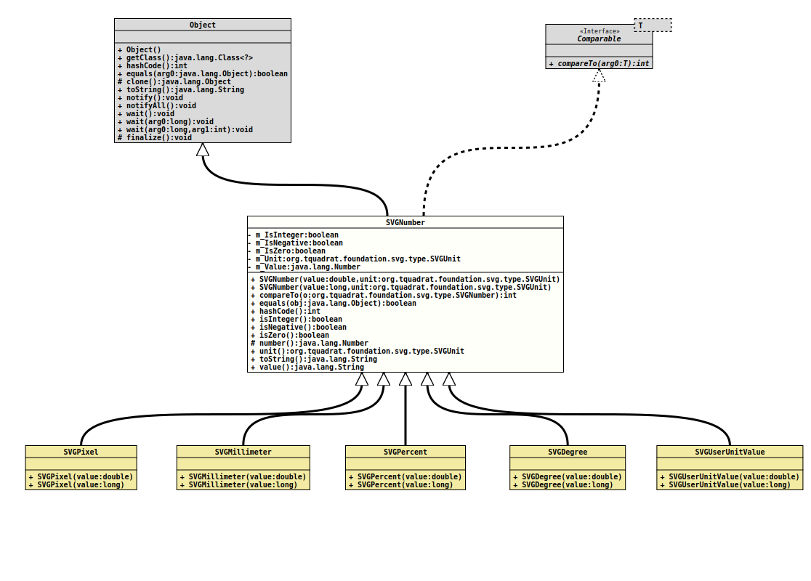

java.lang.Object
org.tquadrat.foundation.svg.type.SVGNumber
- Direct Known Subclasses:
SVGNumber.SVGDegree,SVGNumber.SVGMillimeter,SVGNumber.SVGPercent,SVGNumber.SVGPixel,SVGNumber.SVGUserUnitValue
@ClassVersion(sourceVersion="$Id: SVGNumber.java 1139 2024-06-16 19:50:41Z tquadrat $")
@API(status=STABLE,
since="0.0.5")
public sealed class SVGNumber
extends Object
permits SVGNumber.SVGDegree, SVGNumber.SVGMillimeter, SVGNumber.SVGPercent, SVGNumber.SVGPixel, SVGNumber.SVGUserUnitValue
{kind=link}
A numeric type with a unit as used by various SVG attributes.
- Author:
- Thomas Thrien (thomas.thrien@tquadrat.org)
- Version:
- $Id: SVGNumber.java 1139 2024-06-16 19:50:41Z tquadrat $
- Since:
- 0.0.5
- UML Diagram
-

UML Diagram for "org.tquadrat.foundation.svg.type.SVGNumber"
{kind=link}
-
Nested Class Summary
Nested ClassesModifier and TypeClassDescriptionstatic final classAn SVG degrees type.static final classAn SVG millimeter type.static final classAn SVG percent type.static final classAn SVG pixel type.static final classAn SVG user unit type; usually this is the same asSVGNumber.SVGPixel, but without a unit specifier. -
Field Summary
FieldsModifier and TypeFieldDescriptionprivate final booleanFlag that indicates whether the type is an integer (int) - as in opposite to adouble).private final booleanFlag that indicates whether the type is a negative number.private final booleanFlag that indicates whether the type is zero.private final SVGUnitThe unit.private final NumberThe numerical value. -
Constructor Summary
Constructors -
Method Summary
Modifier and TypeMethodDescriptionfinal booleanfinal inthashCode()final booleanReturns a flag that indicates whether the type is an integer (int) - as in opposite to adouble).final booleanReturns a flag that indicates whether the type is a negative number.final booleanisZero()Returns a flag that indicates whether the type is zero.protected Numbernumber()Returns the numerical value.final StringtoString()unit()Returns the unit for this instance.final Stringvalue()Return the type with the unit for this instance.
){kind=link}
){kind=link}
-
Field Details
-
m_IsInteger
Flag that indicates whether the type is an integer (int) - as in opposite to adouble). There it does not matter that the decimal places of adoubleare effectively zero. -
m_IsNegative
Flag that indicates whether the type is a negative number. -
m_IsZero
Flag that indicates whether the type is zero. -
m_Unit
The unit. -
m_Value
The numerical value.
-
-
Constructor Details
-
SVGNumber
Creates a newSVGNumberinstance.- Parameters:
value- The type.unit- The unit.
-
SVGNumber
Creates a newSVGNumberinstance.- Parameters:
value- The type.unit- The unit.
-
-
Method Details
-
equals
-
hashCode
-
isInteger
Returns a flag that indicates whether the type is an integer (int) - as in opposite to adouble). There it does not matter that the decimal places of adoubleare effectively zero.- Returns:
trueif the type is an integer,falseotherwise.
-
isNegative
Returns a flag that indicates whether the type is a negative number.- Returns:
trueif the type is less than zero,falseotherwise.
-
isZero
Returns a flag that indicates whether the type is zero.- Returns:
trueif the type is 0 (or 0.0),falseotherwise.
-
number
Returns the numerical value.- Returns:
- The numerical value.
-
unit
Returns the unit for this instance.- Returns:
- The unit.
-
toString
-
value
Return the type with the unit for this instance.- Returns:
- The type with unit.
-
{kind=link}
{kind=link}
{kind=link}
{kind=link}
{kind=link}
{kind=link}
{kind=link}
{kind=link}
{kind=link}
{kind=link}
{kind=link}
{kind=link}
{kind=link}
{kind=link}
{kind=link}
{kind=link}